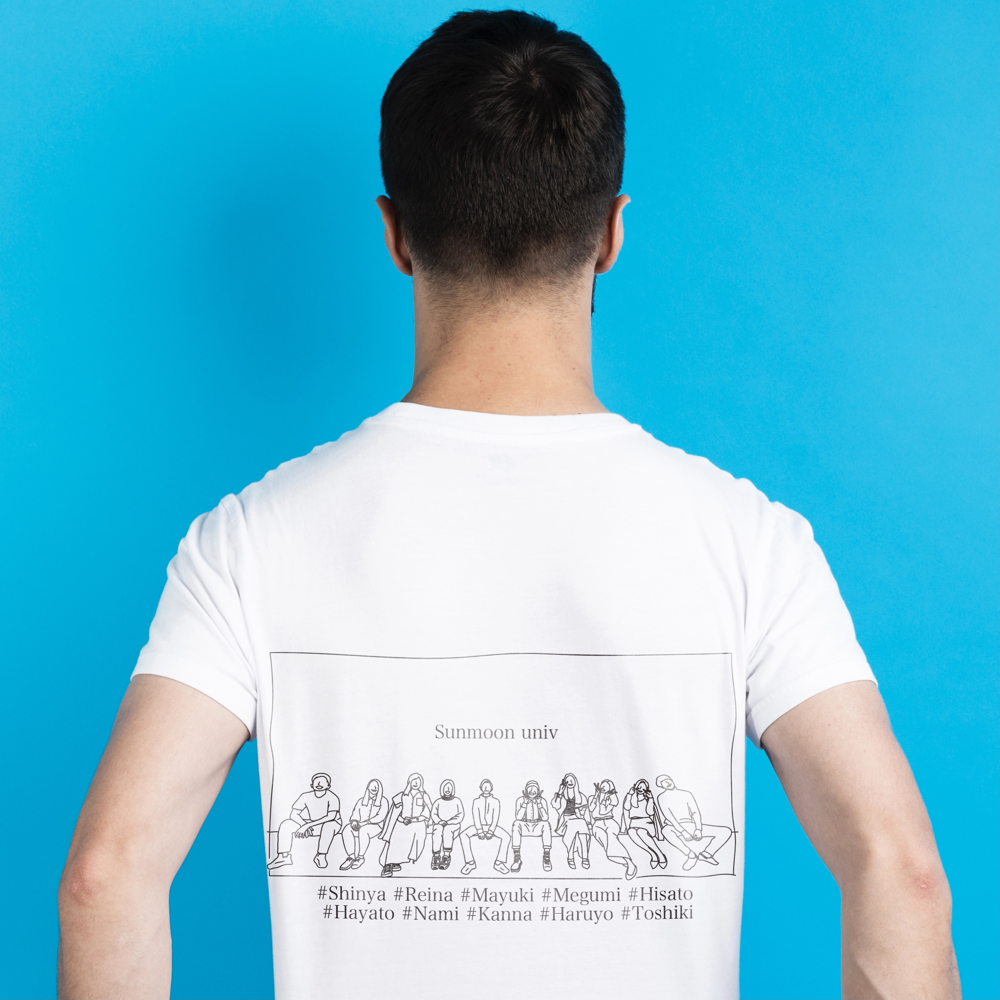

T-Shirt

front

back

toshiki
| : | 愛知県 | |
| : | 1996.02.28 | |
| : | 旅行、カフェ巡り、映画鑑賞、ネイル、買い物、ファッションなど | |
| : | 視覚デザイン学科 | |
| : | しっかり者の小鹿 |

| : | 福島県 | |
| : | 1995.07.25 | |
| : | 読書、スカイウォッチング | |
| : | 神学純潔学科 | |
| : | 楽天的な虎 |

| : | 京都府 | |
| : | 1995.12.08 | |
| : | 折り紙、お菓子作り、パズル、コーヒー、夜景、旅行 | |
| : | ITソフトウェア学科 | |
| : | 母性豊かなコアラ |

| : | 香川県 | |
| : | 1995.06.21 | |
| : | 読書、映画鑑賞 | |
| : | 機械工学学科 | |
| : | 物静かな羊 |

| : | 福岡県 | |
| : | 1995.12.05 | |
| : | 散歩、昼寝、コーヒー、歯磨き、食べること | |
| : | グローバル韓国語学科 | |
| : | 全力疾走するチーター |

| : | 愛知県 | |
| : | 1996.03.07 | |
| : | サッカー、料理 | |
| : | 神学純潔学科 | |
| : | 尽くす猿 |
| : | 兵庫県 | |
| : | 1996.01.28 | |
| : | サッカー、映画鑑賞 | |
| : | 神学純潔学科 | |
| : | 社交家のタヌキ |

| : | 岩手県 | |
| : | 1996.01.17 | |
| : | お皿探し、駅巡り、料理、旅、切手探し、カラオケ、自然と会話など | |
| : | 神学純潔学科 | |
| : | 落ち込みの激しい黒豹 |

| : | 広島県 | |
| : | 1995.12.19 | |
| : | サッカー、麻雀 | |
| : | 神学純潔学科 | |
| : | 落ち着きのあるペガサス |

| : | 静岡県 | |
| : | 1995.10.24 | |
| : | 旅行、韓ドラ、ネイル、買い物、カフェ、新しいことする(体験系)、ギターもやりため | |
| : | 国際経済通商学科 | |
| : | 穏やかな狼 |
front
back
toshiki
stamp1
stamp2